L'appartement, pièce par pièce
Chêne large, pierre claire, laiton brossé. Alpin contemporain plutôt que pastiche de bois sculpté, et dimensionné pour que huit personnes vivent bien ensemble, et non simplement y tiennent.
Chambres
Quatre chambres. Quatre lits king size. Une vue splendide.
Chacune des quatre chambres reçoit un lit king size, et chacune a sa propre fenêtre et sa lumière du jour. C'est tout l'intérêt de ce plan : quatre couples, ou deux familles, se partagent l'appartement sans que personne ne tire la courte paille.
Chaque lit est un Hypnos, ce qui explique pourquoi les hôtes écrivent sur leurs nuits plutôt que sur leurs journées de ski. La chambre principale est lambrissée du sol au plafond en chêne clair, avec une tête de lit capitonnée. Les trois autres sont plus claires : murs blancs, gravures alpines encadrées, plaids de laine olive, rouille et ocre, et une lampe de lecture de chaque côté.
Des armoires encastrées dans chaque chambre, penderie et étagères, et un casier à skis au sous-sol de l'immeuble, pour que le matériel de huit personnes ne finisse jamais dans le couloir.
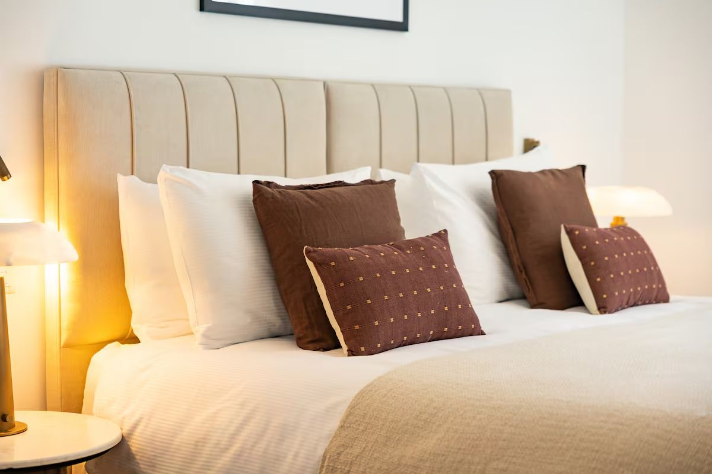
Séjour
Une pièce qui tient toute la tablée
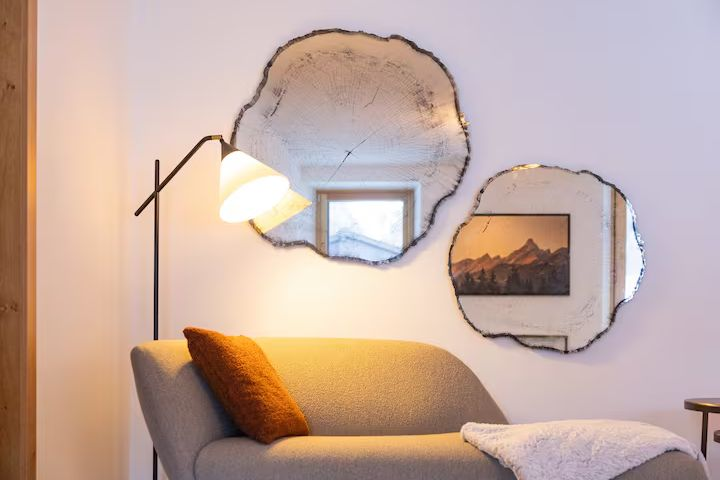
Le séjour se prolonge dans la cuisine sans cloison et prend la lumière sur deux côtés. Un canapé profond vert olive, deux tables basses rondes en bronze, un tapis doux à motifs sur un large parquet de chêne, et une télévision qui est là si on la veut et facile à oublier sinon.
La pièce est assez vaste pour que la moitié du groupe lise pendant que l'autre cuisine. Il y a quantité de plaids bien chauds pour le canapé, et une armoire de jeux pour l'après-midi où passe une tempête.
Cuisine et repas
Une cuisine à la hauteur de huit dîners
Entièrement équipée, et aménagée en taupe clair avec crédence de pierre et robinetterie en laiton brossé : four encastré et cuisinière, plaque à induction, micro-ondes, lave-vaisselle, hotte, réfrigérateur, bouilloire et machine à café, avec des étagères ouvertes pour les verres, les bols et les assiettes de tout le groupe.
La table est une planche unique de noyer à bord naturel, entourée de chaises noires à dossier croisé. Huit places, toutes à la même table. Cuisiner pour un groupe ne fonctionne que si la cuisine et la table encaissent le groupe entier d'un coup. C'est le cas ici.
Le supermarché est à vingt mètres de la porte : faire les courses relève de la commission, pas de l'expédition.
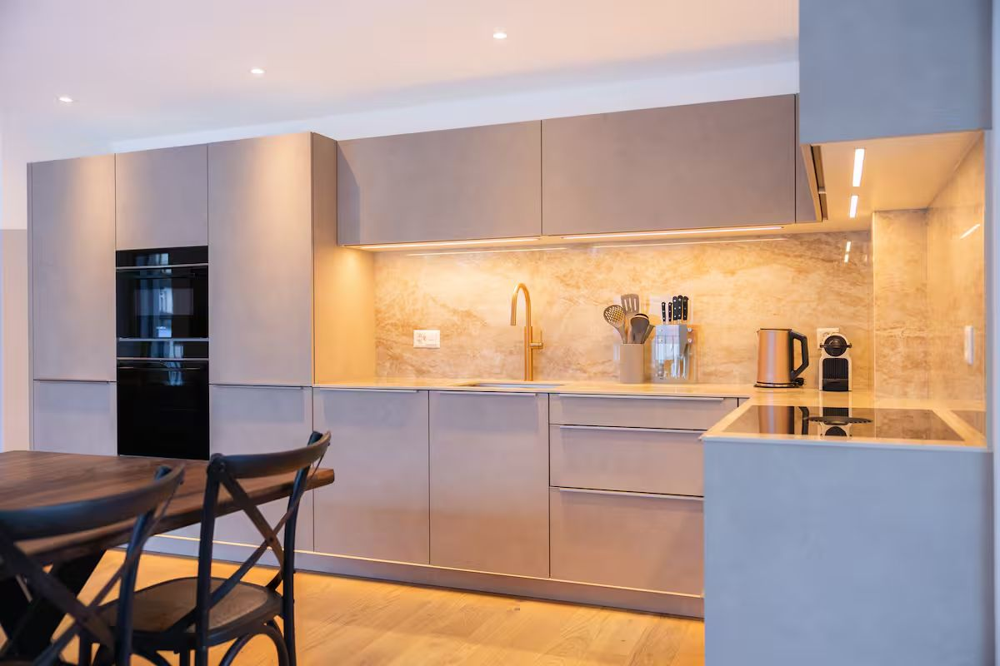
Salles de bains
Trois salles de bains, pierre et ardoise
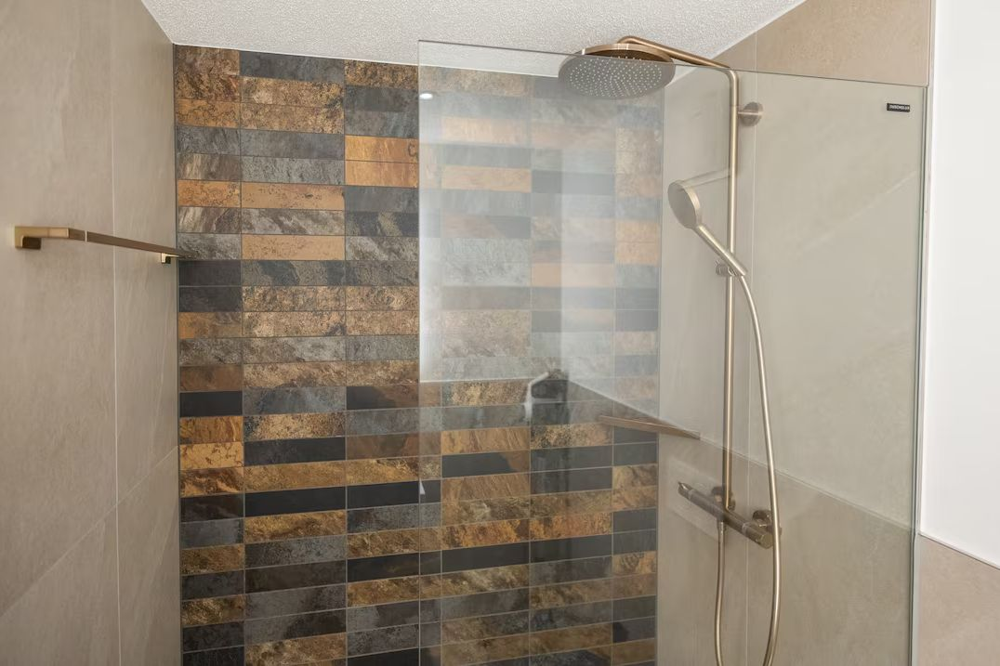
Les trois sont finies en pierre claire grand format avec un bandeau d'ardoise foncée, meubles de chêne suspendus, vasques en pierre et miroirs rétroéclairés. Deux ont une baignoire profonde, ce dont on rêve après une journée entière sur le glacier. La troisième a une douche à l'italienne.
Trois salles de bains pour huit personnes, c'est le rapport qui permet à un matin de ski de fonctionner. Personne ne fait la queue, personne ne négocie l'eau chaude à huit heures. Peignoirs, serviettes et sèche-cheveux fournis, et un lave-linge avec sèche-linge pour le matériel de la semaine.
Dehors
Un balcon dont vous n'aurez pas envie de rentrer
Un grand balcon couvert court sur toute la longueur de l'appartement, au-dessus des toits du village et tourné droit vers la montagne. Il est meublé pour s'asseoir et non pour rester debout, avec de profonds fauteuils lounge en tressage, des tables basses et assez d'abri pour rester dehors quand il neige. C'est alors qu'il est le plus beau.
Il regarde la paroi des Mischabel. Le matin, la lumière descend la face avant d'atteindre le village. Le soir, les sommets la retiennent encore vingt minutes alors que la rue est déjà à l'ombre, et à ce moment-là personne n'est pressé de rentrer.
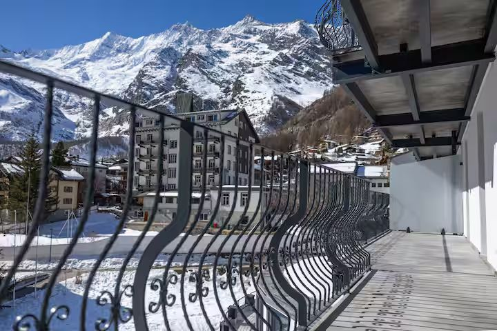
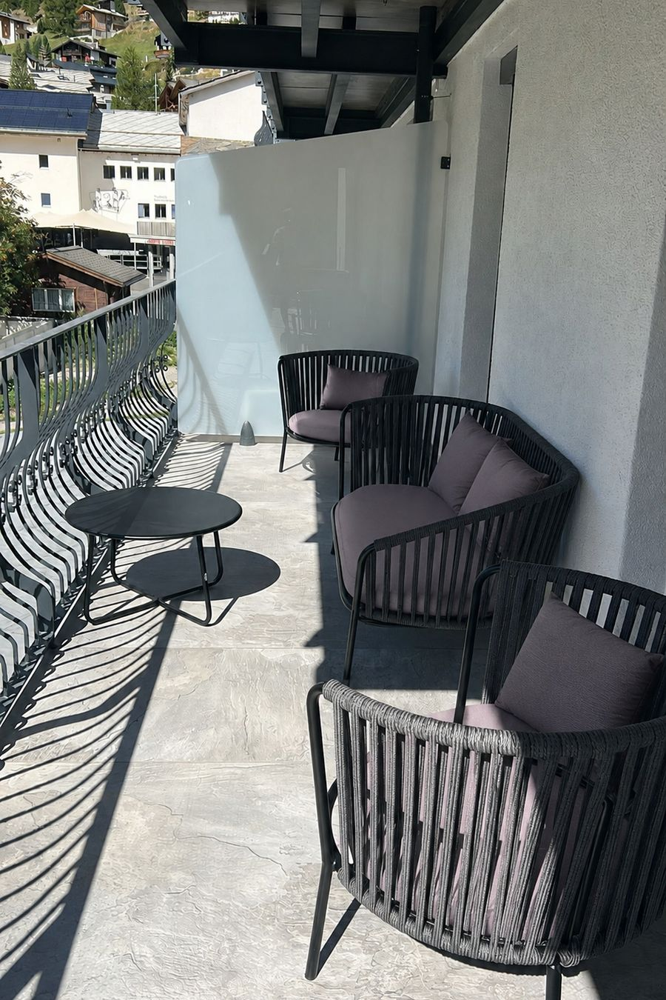
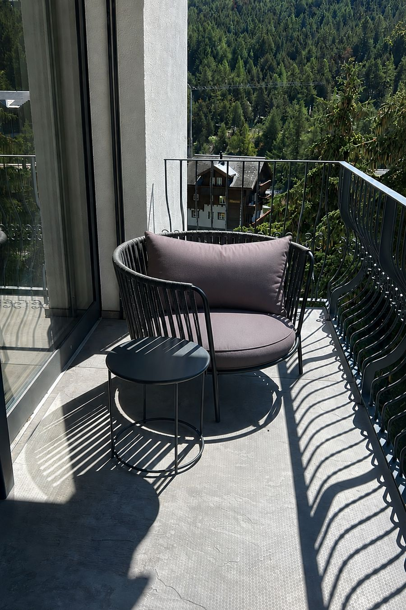
Plan
Comment l'appartement est distribué
Quatre chambres, trois salles de bains et une longue pièce ouverte, le tout de plain-pied à l'extrémité de l'étage. Le séjour approche les quarante mètres carrés, les chambres font entre onze et quatorze chacune, et le balcon couvert en façade en ajoute vingt-cinq.
Ci-dessous, le plan d'origine de l'architecte pour l'appartement B4. C'est le moyen le plus rapide de décider qui prend quelle chambre, avant même que quiconque ait fait ses valises.
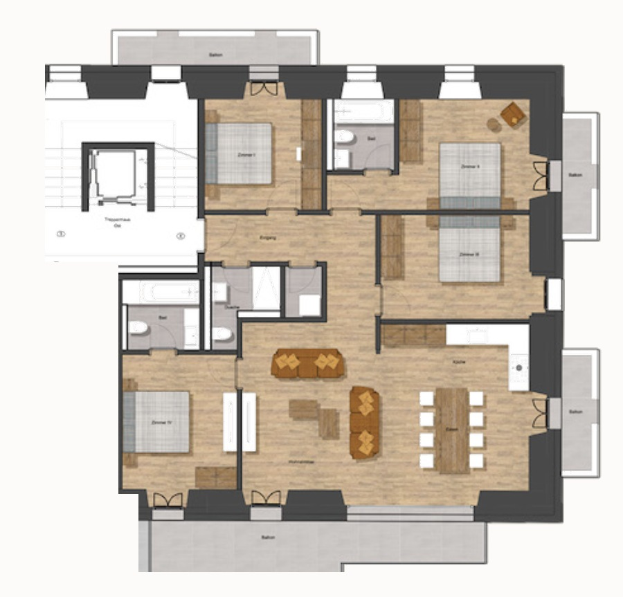
Équipement
Ce qui vous attend
- Quatre chambres, quatre lits king size
- Literie et matelas Hypnos
- Huit personnes
- Trois salles de bains : deux baignoires profondes et une douche à l'italienne
- Séjour et cuisine ouverts l'un sur l'autre
- Cuisine entièrement équipée
- Table en noyer pour huit personnes
- Four, cuisinière, plaque à induction et micro-ondes
- Lave-vaisselle
- Machine à café et bouilloire
- Lave-linge et sèche-linge
- Internet haut débit dans tout l'appartement
- Télévision au séjour
- Grand balcon face aux sommets
- Mobilier de balcon pour les longs après-midis
- Ascenseur jusqu'à l'appartement
- Casier à skis dans l'immeuble
- Armoires encastrées et rangement pour le matériel
- Linge de lit, serviettes et sèche-cheveux fournis
- Quantité de plaids bien chauds
- Jeux pour les enfants
- Produits d'entretien à disposition
- Parquet en chêne, chaleureux et silencieux
- Détecteurs de fumée et de monoxyde de carbone
- Non-fumeurs, animaux non admis
- Quatre minutes à pied des pistes
- Au cœur du village sans voitures
- Immeuble entièrement rénové
Pratique
Les détails
| Capacité | 8 personnes |
|---|---|
| Chambres | 4, chacune avec un lit king size |
| Salles de bains | 3 : deux avec baignoire profonde, une avec douche à l'italienne |
| Adresse | Residence du Glacier, Blomattenstrasse 2, 3906 Saas-Fee, Valais, Suisse |
| Distance des pistes | Quatre minutes à pied, à travers le village |
| Supermarché le plus proche | À vingt mètres de la porte |
| Rangement à skis | Un casier au sous-sol de l'immeuble |
| Ascenseur | Oui, jusqu'à la porte de l'appartement |
| Parking | Dans les parkings de l'entrée du village. Saas-Fee est sans voitures. |
| Gare la plus proche | Viège, puis le car postal jusqu'au fond de la vallée (environ une heure) |
| Arrivée / départ | À partir de 15 h ; départ flexible |
| Géré par | SaasFeeHolidays.com, au village |
| Ouverture | Hiver et été |
Arrivée à partir de 15 h, départ flexible. Les clés et l'enregistrement pour la taxe de séjour sont gérés par SaasFeeHolidays.com, au village, et confirmés avant votre départ. Voir comment réserver.
Photographies
L'appartement, suite
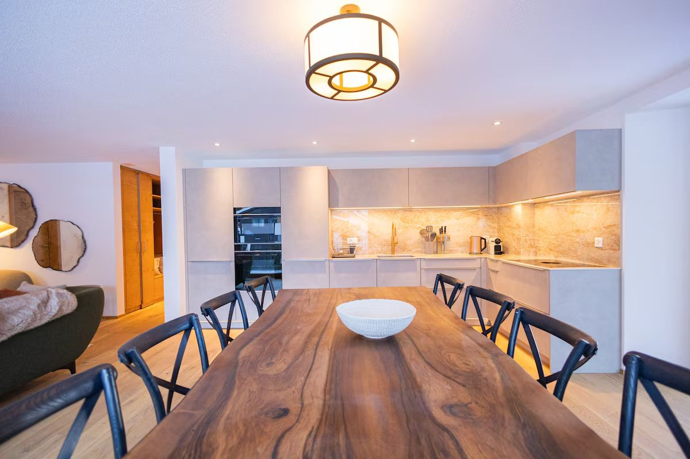
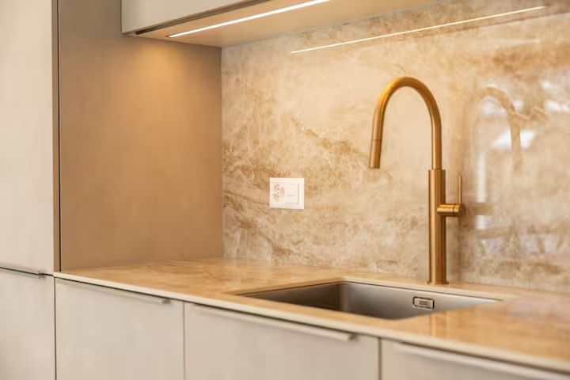
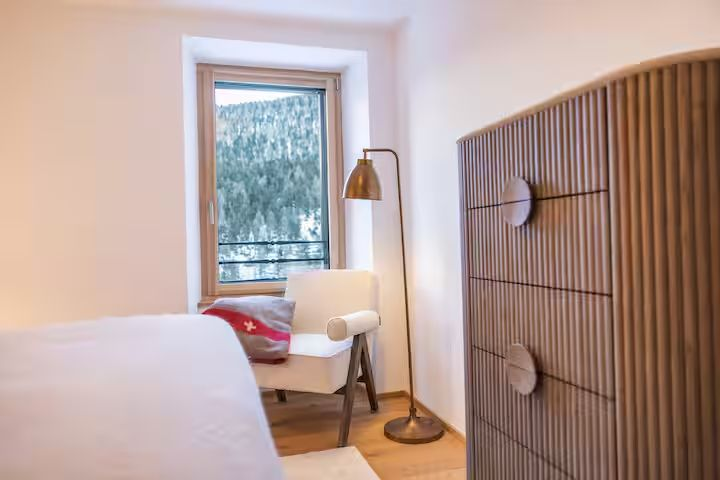
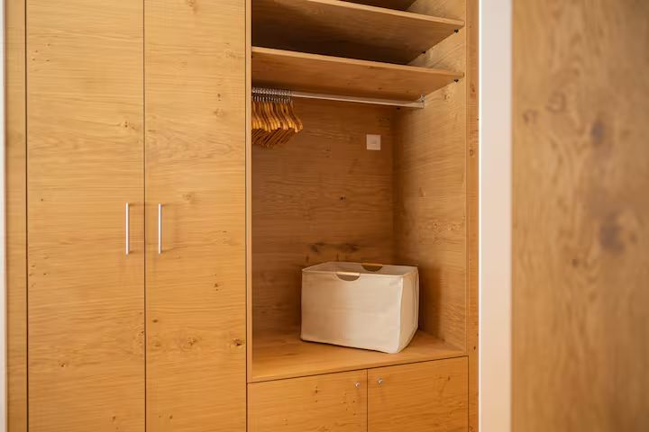
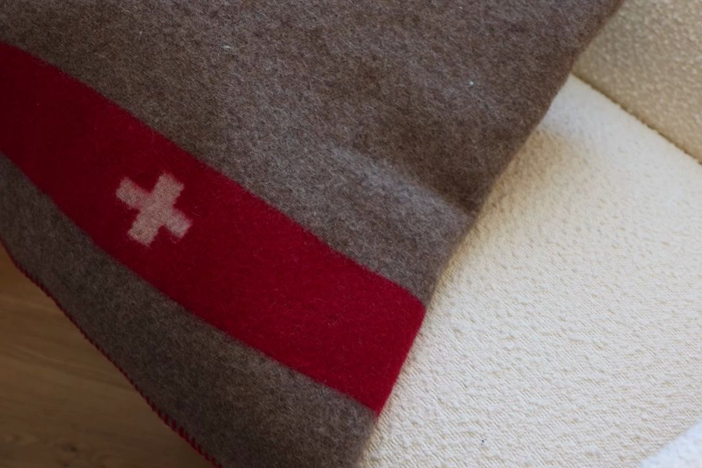
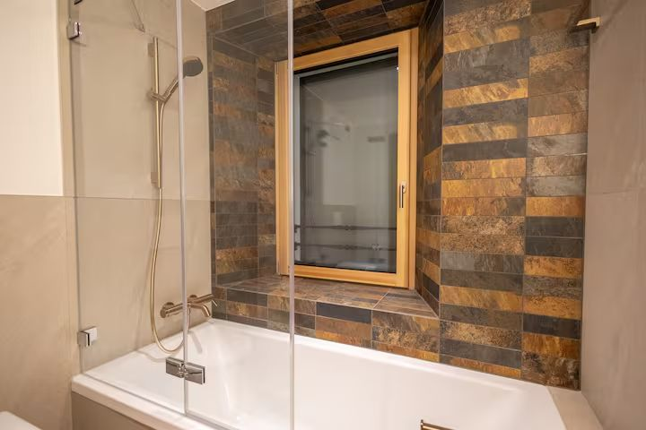
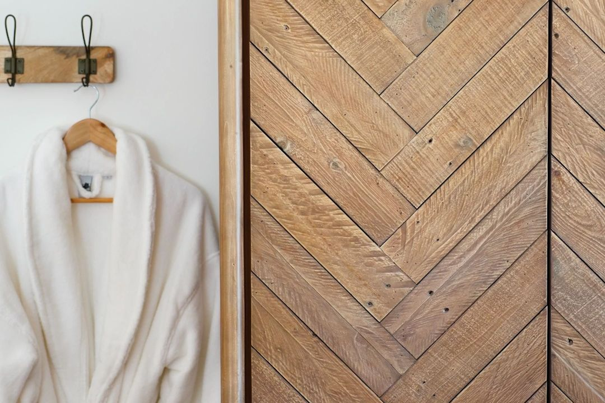